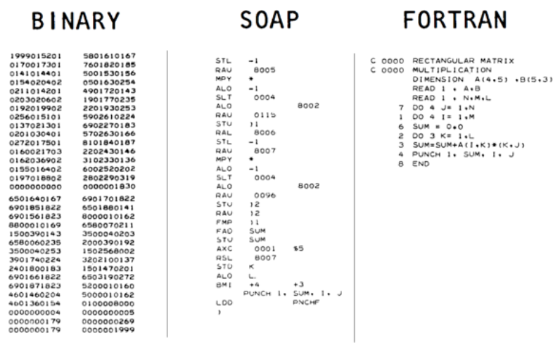

Lecture 1: Introduction
1 What is a Compiler?
We all have an intuitive understanding of what a program is: it’s some thing that instructs a computer to do something. But the language in which we tend to write our programs is nothing like the language that the computer understands natively. Something must translate the source code of our programs into a form the computer understands.
Conceptually, there are two ways this could happen: first, we could write a program that takes the source code of our program and interprets it on the fly, translating as it goes. This is roughly how languages like Python and JavaScript run programs in it. In practice JavaScript uses a combination of an interpreter and "just-in-time" compilation for performance reasons The downside to this approach is that we must keep both the source code and the interpreter around whenever we want to run the program. In addition, the interpreter adds a level of runtime overhead because it adds a layer of indirection: the interpreter has to figure out what the code means in order to run.
Second, we could write a program that translates the source code of our program into a form the machine can understand directly. Once this translation step has completed, we no longer need the source or the translator; we can just execute the resulting program directly.
In other words, a compiler is simply a function that maps an input string to an output string,
compiler : String -> Stringwhere we typically consider the input and output strings to be programs in two different languages:
compiler : SourceProgram -> TargetProgramFor example, here are some well-known compilers
gcc, clang : C/C++ -> Binary /* a.out, .exe */
emcc : C/C++ -> WebAssembly
rustc : Rust -> Binary
javac : Java -> JvmByteCode /* .class */
scalac : Scala -> JvmByteCode
gwt : Java -> JavaScript /* .js */
v8 : JavaScript -> Binary
nasm : X64 -> Binary
pdftex : LaTeX -> PDF
pandoc : Markdown -> PDF or Html or DocKey Requirements on output program:
Has the same meaning (“semantics”) as input,
Is executable in relevant context (VM, microprocessor, web browser).
1.1 A Bit of History
Compilers were invented to avoid writing machine code by hand.

Richard Hamming – The Art of Doing Science and Engineering, p25:
In the beginning we programmed in absolute binary... Finally, a Symbolic Assembly Program was devised – after more years than you are apt to believe during which most programmers continued their heroic absolute binary programming. At the time [the assembler] first appeared I would guess about 1% of the older programmers were interested in it...a real programmer would not stoop to wasting machine capacity to do the assembly.
John A.N. Lee, Dept of Computer Science, Virginia Polytechnical Institute:
One of von Neumann’s students at Princeton recalled that graduate students were being used to hand assemble programs into binary for their early machine. This student took time out to build an assembler, but when von Neumann found out about it he was very angry, saying that it was a waste of a valuable scientific computing instrument to use it to do clerical work.
The term compiler was coined by Grace Hopper, who also wrote the first "compiler" (more accurately the first linker in today’s terminology). She was an early advocate for and designer of high-level programming languages.

1.2 What does a Compiler look like?
{kind=link}
An input source program is converted to an executable binary in many stages:
Parsed into a data structure called an Abstract Syntax Tree
Checked to make sure code is well-formed (and well-typed)
Simplified into some convenient Intermediate Representation
Optimized into (equivalent) but faster program
Generated into assembly
x64Linked against a run-time (usually written in C)
1.3 What is EECS 483?
A bridge between two worlds
High-level Languages (EECS 281)
Machine Code (EECS 370)
A sequel to both those classes.
How to write a compiler for a small-ish language to x64:
Parsing
Checking & Validation
Simplification & Normalizing
Optimization
Code Generation
But also, how to write complex programs
Design
Implement
Test
Iterate
2 Course Outline
3 What will we do?
Writing a compiler directly from a high-level language to x64 isn’t easy to build in a single step. So we will write many compilers, each adding new features:
Numbers and increment/decrement
Local Variables
Nested Binary Operations
Booleans, Branches and Dynamic Types
Functions
Tuples and Structures
Lambdas and closures
Garbage Collection
At this point you will have a language akin to Javascript without objects, but there are many more extensions we can try:
Optimizations
Static type enforcement
Mutable variables
Objects
...
We may not get to implementing all of these, but we will see where they each fit into the architecture of a compiler.
4 What will you learn?
Core principles of compiler construction
Managing Stacks & Heap
Managing Registers/Calling Conventions
Intermediate forms
Optimization
Lexing and Parsing
Type Checking/Validation
Programming languages
Rustto write the compilerUnsafe Rustto write the “run-time”X64compilation target
More importantly how to write a large program
How to use types for design
How to add new features / refactor
How to test & validate